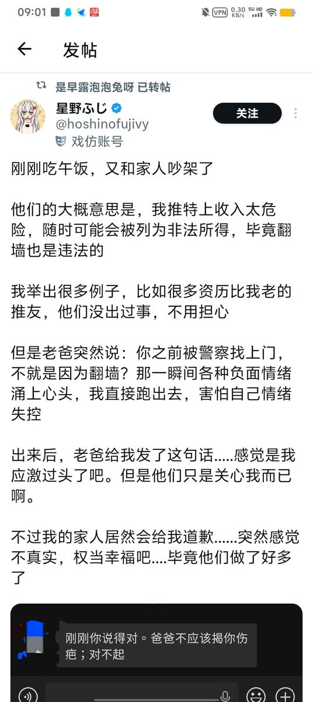

不好意思哈，我家不是你口中的那种「原生家庭」是真正的家，我何必逃离呢？
我家还真和你们的不一样，这是我们全家人努力的结果，他们以前不会爱，我教会了他们，而我得父母也乐意学习、乐意改变，无法改变的家庭才需要逃离
为何我的内心会压抑？社会氛围如此，但我知道这绝不是他们的错，因为他们也是身不由己，而他们已经很努力在改变了
那天吵架后，老爸趁我不在家，写了这张纸条放在我书桌上，我给他如下回复
另外你挂我的时候不敢直接引用原帖，而是截图挂人，是怕我知道吗？躲在阴暗角落可悲的家伙.....呵呵
权且拉黑你吧，你的所作所为将你自己的身份降低，不怪我哟~

我家还真和你们的不一样，这是我们全家人努力的结果，他们以前不会爱，我教会了他们，而我得父母也乐意学习、乐意改变，无法改变的家庭才需要逃离
为何我的内心会压抑？社会氛围如此，但我知道这绝不是他们的错，因为他们也是身不由己，而他们已经很努力在改变了
那天吵架后，老爸趁我不在家，写了这张纸条放在我书桌上，我给他如下回复
另外你挂我的时候不敢直接引用原帖，而是截图挂人，是怕我知道吗？躲在阴暗角落可悲的家伙.....呵呵
权且拉黑你吧，你的所作所为将你自己的身份降低，不怪我哟~

是河北理科生，是忧郁多情，是逃离河北，是“这个世界出了错”
宁愿学哈姆雷特没开智时候那样想干啥干啥上推上吐泔水，也不敢上你们派出所门口撒一泡，而且大学了还得家里人管着，对吧？
发两个破字就敢显摆自己高二参透生死（这是他原话）了，你卤味的这家伙岁数比我大还这么幼稚，防火还是太低了 https://t.co/UmWVCW9Bs9
宁愿学哈姆雷特没开智时候那样想干啥干啥上推上吐泔水，也不敢上你们派出所门口撒一泡，而且大学了还得家里人管着，对吧？
发两个破字就敢显摆自己高二参透生死（这是他原话）了，你卤味的这家伙岁数比我大还这么幼稚，防火还是太低了 https://t.co/UmWVCW9Bs9